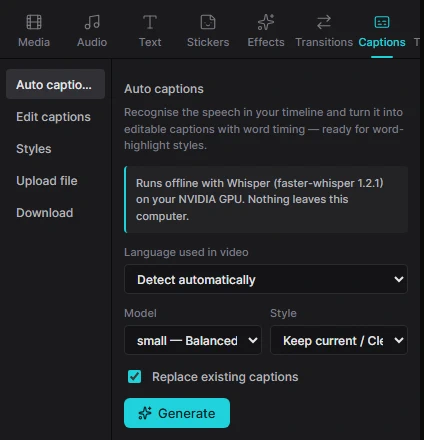
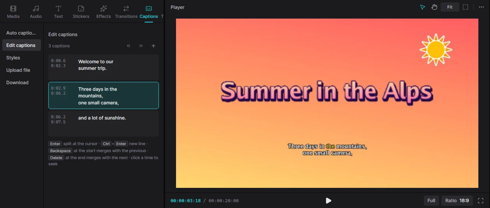
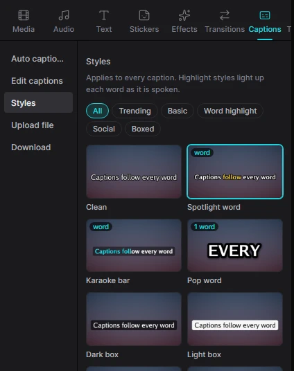
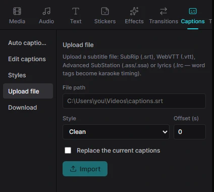
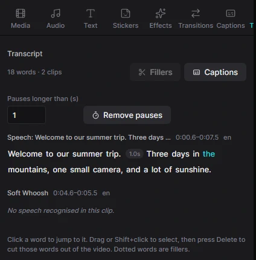

For humansCreating5 min read
Captions & transcript
Kadr can listen to your video and write the subtitles for you — on your own computer, without uploading anything. You can then restyle them, fix words, save them as an SRT file, or even edit the video by deleting words from its transcript.
What you need
Speech recognition uses Whisper (through the free faster-whisper package), which runs on Python. You set it up once:
-
Install Python
Download Python 3.9 or newer from python.org and run the installer. On its first page tick Add python.exe to PATH.
-
Install faster-whisper
Open PowerShell (Start menu → type “PowerShell”) and run:
pip install faster-whisper -
Download a speech model once
Still in PowerShell, run the line below. It downloads the recommended small model (about 500 MB). This is the only step that needs the internet.
python -c "from faster_whisper import WhisperModel; WhisperModel('small')" -
Check in Kadr
Open Captions → Auto captions. If it still says Speech recognition is not set up, click Check again (or restart Kadr). When it works, the panel says it runs offline with Whisper on your CPU or NVIDIA graphics card.
An NVIDIA graphics card makes recognition several times faster. Without one, choose the small or base model. If Kadr picks the wrong Python, see Troubleshooting.
Make captions automatically

- Open the Captions tab; Auto captions is selected on the left.
- Language used in video — keep Detect automatically, or choose the language (about 100 are available, including English and Ukrainian). Choosing it is a little more accurate.
- Model — tiny is fastest, small is the balanced default, medium and large-v3 are the most accurate but slow without a graphics card. Models you haven't downloaded are greyed out.
- Style — the look of the captions (you can change it later).
- Leave Replace existing captions ticked to start fresh, then click Generate.
A progress bar shows each stage (extracting sound, loading the model, recognising speech). You can keep editing meanwhile, or cancel with the ×. The captions appear on their own Captions track, timed word by word.
Auto captions listen to every clip with sound on the timeline. The same command is in the toolbar's Smart tools menu; when a video or audio clip is selected there, only that clip is captioned.
Fix and adjust captions

Choose Edit captions on the left. Every caption is listed with its start and end time. Click into the text to correct it:
| Key / button | Effect |
|---|---|
| Enter | Splits the caption in two at the text cursor. |
| Ctrl+Enter | Starts a new line inside the same caption. |
| Backspace at the very start | Merges the caption with the previous one. |
| Delete at the very end | Merges it with the next one. |
| Click a time | Moves the playhead to that caption. |
| ‹ › next to a time | Moves the start or the end by 0.1 s. |
| « » at the top | Moves all captions 0.1 s earlier or later — useful when everything is slightly out of sync. |
| + at the top | Adds a new caption at the playhead. |
| Bin icon | Deletes the caption. |
Captions are text clips, so you can also move and trim them on the timeline and style a single caption in the Text inspector.
Caption styles and word highlight
Choose Styles on the left and click a style to apply it to every caption. The chips filter the 15 styles: Trending, Basic, Word highlight, Social and Boxed.
Styles marked word light up each word as it is spoken — the karaoke look popular on TikTok and Reels. They work because auto captions know the timing of every word.
To fine-tune the highlight, select a caption on the timeline and open Text → Animate in the inspector. Under Caption highlight choose Colour, Box, Grow, Underline or Karaoke, plus the highlight colour.

Import and export subtitle files
Upload file imports subtitles you already have: type the full path of the file, pick a style, optionally an Offset in seconds (to shift them), tick Replace the current captions if needed, and click Import. Supported: SubRip .srt, WebVTT .vtt, Advanced SubStation .ass/.ssa and lyrics .lrc (word tags in LRC become karaoke timing).
Download saves your captions as SubRip (.srt), WebVTT (.vtt), plain text (.txt) or lyrics (.lrc). Type where to save and click Save, or click Copy text to paste them somewhere else. Upload the SRT to YouTube to get captions viewers can switch on and off.

Edit the video by editing text

The Transcript tab shows everything that is said in your video as text. Deleting words here cuts them out of the video — the easiest way to clean up interviews, vlogs and podcasts.
- Open the Transcript tab. If clips have no transcript yet, pick the Spoken language and click Transcribe. (Clips that already have auto captions are transcribed.)
- Click a word to jump to it in the video.
- Drag across words, or click one and Shift+click another, to select a stretch.
- Press Delete (or the Delete button that appears) — the video and its captions are cut to match. Esc clears the selection.
Remove filler words and pauses
- Fillers — removes hesitations such as “um”, “uh”, “er” and, when used as fillers, “like” or “you know”. English, Ukrainian and Russian are recognised. The number on the button tells you how many were found; they are shown with a dotted underline in the text.
- Remove pauses — shortens every silence longer than the number you set (in seconds) down to 0.3 s. Pauses are shown as small grey badges between words.
- Captions — creates captions from the transcript without running recognition again.
Each of these is a single step you can undo with Ctrl+Z. Faded words are ones the recogniser was unsure about — worth checking.
Private by design. Recognition runs entirely on your computer; your audio is never uploaded. Kadr never downloads models on its own — only the command in step 3 above does.